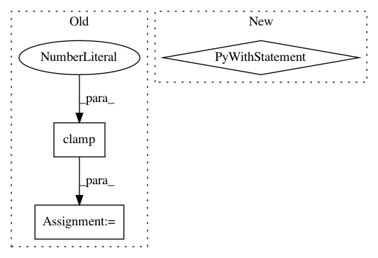

6bca4eed74e22ee369c166649f15db56f8565e35,test/lazy/_lazy_tensor_test_case.py,LazyTensorTestCase,test_inv_quad_logdet_no_reduce,#LazyTensorTestCase#,586
Before Change
[torch.logdet(flattened_evaluated[i]).unsqueeze(0) for i in range(lazy_tensor.batch_shape.numel())]
).view(lazy_tensor.batch_shape)
diff_invq = (res_inv_quad.sum(-1) - actual_inv_quad).abs() / actual_inv_quad.abs().clamp(1, math.inf)
diff_logdet = (res_logdet - actual_logdet).abs() / res_logdet.abs().clamp(1, math.inf)
self.assertLess(diff_invq.max().item(), 0.01)
self.assertLess(diff_logdet.max().item(), 0.3)
After Change
vecs_copy = vecs.clone().detach_().requires_grad_(True)
with gpytorch.settings.num_trace_samples(128):
with gpytorch.settings.max_cholesky_numel(0), gpytorch.settings.cg_tolerance(1e-5):
res_inv_quad, res_logdet = lazy_tensor.inv_quad_logdet(
inv_quad_rhs=vecs, logdet=True, reduce_inv_quad=False
)
actual_inv_quad = evaluated.inverse().matmul(vecs_copy).mul(vecs_copy).sum(-2).sum(-1)
actual_logdet = torch.cat(
[torch.logdet(flattened_evaluated[i]).unsqueeze(0) for i in range(lazy_tensor.batch_shape.numel())]
).view(lazy_tensor.batch_shape)
In pattern: SUPERPATTERN
Frequency: 3
Non-data size: 3
Instances
Project Name: cornellius-gp/gpytorch
Commit Name: 6bca4eed74e22ee369c166649f15db56f8565e35
Time: 2019-03-23
Author: gpleiss@gmail.com
File Name: test/lazy/_lazy_tensor_test_case.py
Class Name: LazyTensorTestCase
Method Name: test_inv_quad_logdet_no_reduce
Project Name: kengz/SLM-Lab
Commit Name: 5503ea33ceb7685fd1bf8c844cdfc4dba3ebbb3e
Time: 2019-10-19
Author: kengzwl@gmail.com
File Name: slm_lab/agent/algorithm/sac.py
Class Name: SoftActorCritic
Method Name: train_alpha
Project Name: cornellius-gp/gpytorch
Commit Name: 6bca4eed74e22ee369c166649f15db56f8565e35
Time: 2019-03-23
Author: gpleiss@gmail.com
File Name: test/lazy/_lazy_tensor_test_case.py
Class Name: LazyTensorTestCase
Method Name: test_inv_quad_logdet